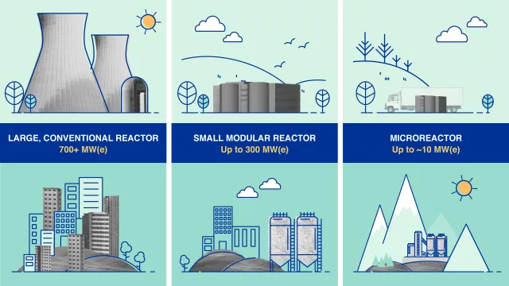
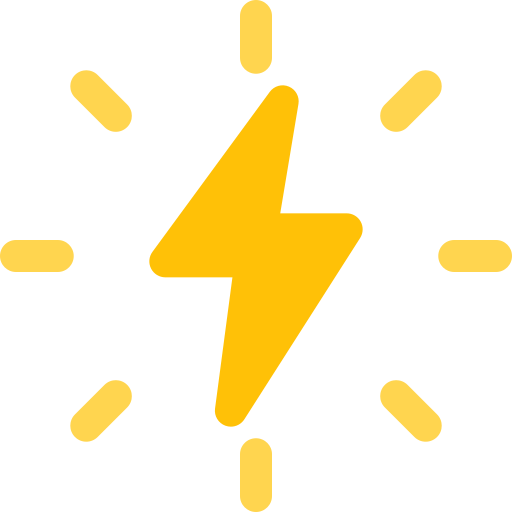
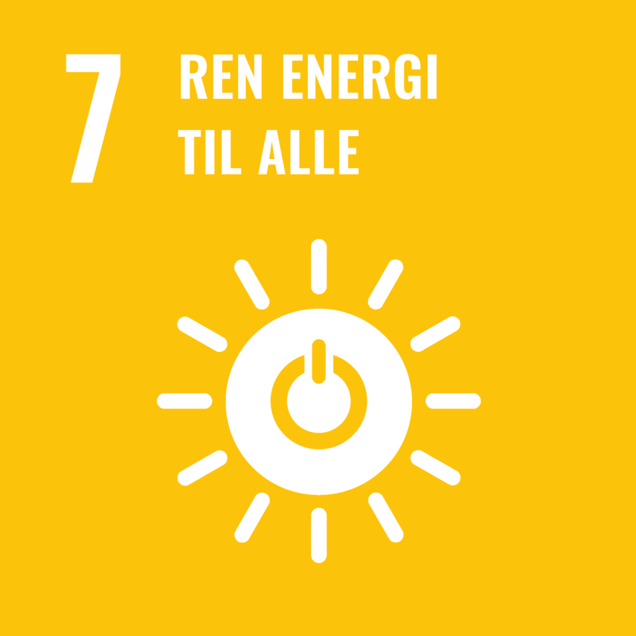
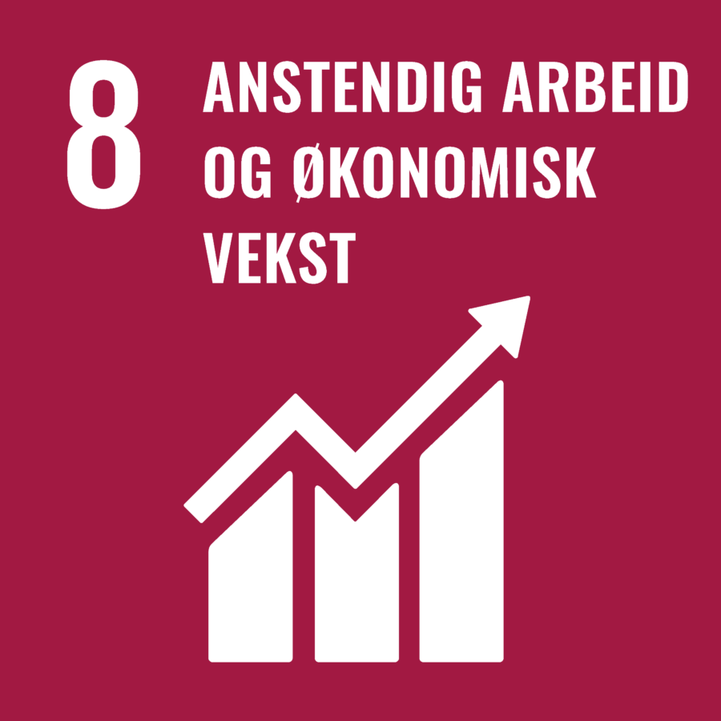
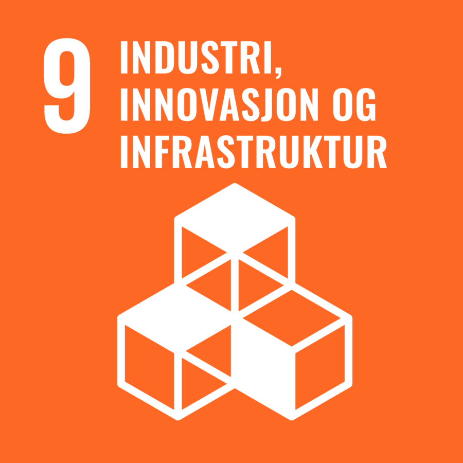
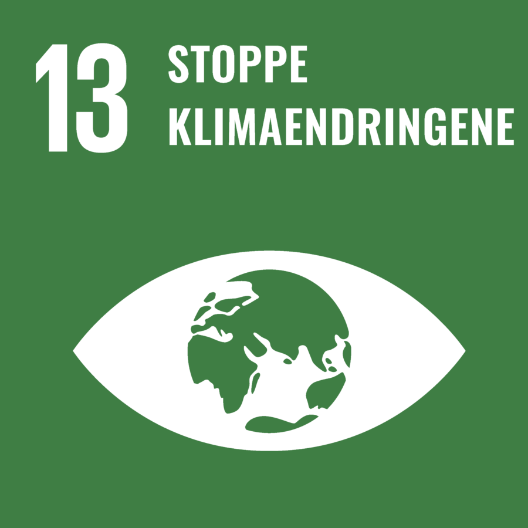
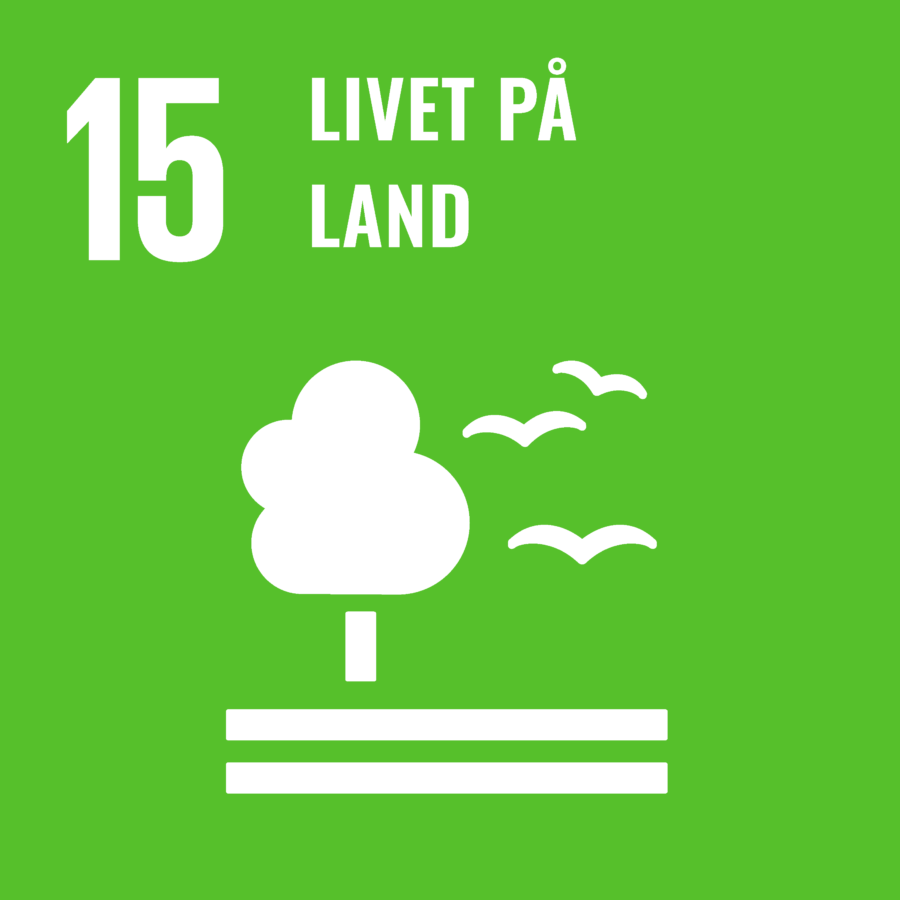

Bilde: Energy, Nuclear power plant, Grohnde image
Kilde: pixabay.com
URL: https://pixabay.com/photos/energy-nuclear-power-plant-grohnde-4030427
Halden, en by med kjernekraft historie
Halden, den lille grensebyen, var en av få byer med atomreaktor til den ble stengt i 2018. Reaktoren genererte ikke strøm, men ga verdifulle data til bruk i forskning. Når TikTok, Google og muligens OpenAI nå skal etablere datasentre i Norge, reiser det viktige spørsmål: Hvordan blir energibehovet for Norge i framtiden, og hvordan vil dette påvirke strømprisene for vanlige forbrukere?
Halden kjernekraft har kjøpt tomt ved Femsjøen med planer om å bygge et kjernekraftverk. Valget av nettopp Halden er logisk, byen er en av få i Norge med erfaring fra atomreaktor, og selskapet kan bygge videre på dataene fra IFE og den gamle reaktoren.
Vi trenger mer strøm
Ifølge Halden kjernekraft sin lokaliseringsstudie var det samlede elektrisitetsforbruket i 2021 i Oslo, Akershus og Østfold beregnet til om lag 24 TWh. Samtidig utgjorde all produksjon i denne regionen omtrent 6 TWh, altså omtrent en fjerdedel av forbruket. Statnetts prognoser indikerer at Sør-Norge samlet kan gå inn i et kraftunderskudd innen 2028. Konsekvensene av et vedvarende underskudd vil blandt annet være begrensede muligheter for etablering av ny industri, svekket forsyningssikkerhet og økt prisvolatilitet i kraftmarkedet.
Google planlegger etablering av et datasenter i Skien, et prosjekt som vurderes som attraktivt for lokale myndigheter på grunn av forventede investeringer og sysselsettingseffekter. Anslag tyder på at et stort datasenter kan kreve betydelige mengder elektrisitet. Enkelte estimater angir opp mot fem prosent av Norges totale strømforbruk, noe som langt overstiger lokal produksjon i Skien-området. Norges tilgang til fornybar vannkraft og ambisjon om karbonnøytral energiforsyning gjør landet strategisk interessant for store aktører som Google, som har mål om å operere på fornybar energi. Etableringen er i tråd med nasjonale strategier for datasenterlokalisering og digitalisering. Det forventes å generere et høyt antall arbeidsplasser i byggefasen, anslagsvis 2000. Samtidig et betydelig, men langt lavere antall faste stillinger i driftsfasen, som vil ligge på omtrent 100 ansatte.
"Hvis det ikke bygges mer kraft vil datasentre sluke all tilgjengelig kraft i området" sier selv politiker Ådne Naper (SV)
Kraftbalanse Oslo, Akershus og Østfold (2021)
SMR og sikkerhet
Historiske ulykker ved kjernekraftverk, som Tsjernobyl og Fukushima har skapt bekymringer knyttet til sikkerhet. Small Module Reactors (SMR) møter disse bekymringene, ifølge Halden-prosjektets rapport om ringvirkninger knyttet til kjernekraft. SMR er mindre reaktorenheter med effekt på opptil noen hundre megawatt per modul. Et sentralt prinsipp er at de kan prefabrikeres i kontrollerte fabrikkmiljøer. Dette gjør at byggetiden reduseres, kvalitetssikringen forbedres og kostnadskontrollen blir bedre sammenlignet med tradisjonelle anlegg.
Moderne SMR-design har ofte passive sikkerhetsegenskaper som ikke krever aktive teknsike inngrep eller nødstrøm. De baserer seg heller på fysiske prinsipper for å oppnå stabil nedkjøling og sikker nedstenging under avvikssituasjoner, som igjen reduserer risikoen for menneskelige feil. Når det kommer til radioaktivt avfall, presiserer Halden Kjernekraft at SMR-anlegg genererer mindre volum per modul enn større reaktorer. Likevel krever all kjernefysisk energiproduksjon mellomlagring og endelig sluttdisponering. Det er bred enighet innen fagfeltet at dypgeologiske sluttlagre er det mest robuste alternativet for langsiktig sikring av høyaktivt avfall.
SMR er en teknologi med potensial for forbedret sikkerhet og byggeprosess, men krever fortsatt streng regulering, teknisk dokumentasjon samt åpen dialog om økonomi, avfallshåndtering og samfunnsmessig aksept.
Klarer du dette?
Hvorfor ønsker Halden kommune å satse på et SMR-anlegg i stedet for et tradisjonelt kjernekraftverk?

Figur over: Small Modular Reactors (SMRs) Kilde: International Atomic Energy Agency (IAEA), 2024 URL: https://www.iaea.org/newscenter/news/what-are-small-modular-reactors-smrs
SMR vs Tradisjonell Kjernekraft

Effekt
Klikk for å se mer
Effekt
SMR: Opp til 300 MW per generator
Tradisjonell: 1000-1600 MW
SMR er mer fleksibelt for mindre behov
Byggetid
Klikk for å se mer
Byggetid
SMR: 2-5 år
Tradisjonell: 10-15 år
Fabrikkproduksjon gjør SMR raskere
Kostnad
Klikk for å se mer
Kostnad
SMR: Lavere initial investering
Tradisjonell: Meget høy initial kostnad
SMR krever mindre kapital å starte
Sikkerhet
Klikk for å se mer
Sikkerhet
SMR: Passiv sikkerhet, automatisk nedstengning
Tradisjonell: Aktive sikkerhetssystemer
SMR krever mindre menneskelig inngrep
Størrelse
Klikk for å se mer
Størrelse
SMR: Kompakt, kan fraktes ferdig
Tradisjonell: Massive konstruksjoner på stedet
SMR tar mindre plass og er modulær

Avfall
Klikk for å se mer
Avfall
SMR: Mindre mengde, lettere å håndtere
Tradisjonell: Større volum radioaktivt avfall
Begge krever trygg lagring i hundrevis av år
FNs bærekraftmål
Halden kjernekrafts lokaliseringsstudie argumenterer for at det planlagte kjernekraftverket kan bidra til oppnåelse av flere av FNs bærekraftmål. Dette er særlig knyttet til pålitelig energi, industriell utvikling og økonomisk vekst. Slike påstander krever imidlertid støtte i uavhengige livssyklusanalyser og helhetlige vurderinger av miljø-, sikkerhets- og samfunnsmessige konsekvenser for å kunne dokumenteres faglig.
Rapporten peker på at anlegget kan gi stabil døgnkontinuerlig kraftproduksjon uavhengig av vær og klima. Den hevder også at kjernekraft gir lavere klimagassutslipp over hele livsløpet sammenlignet med fossile alternativer, men at dette avhenger av hvordan bygging, drift, avfallshåndtering håndteres. De anslagte 400 arbeidsplassene inkluderer både midlertidige byggejobber og permanente driftsstillinger. Arealbruken er relativt begrenset, men lokale økologiske og landskapsmessige konsekvenser må utredes tidlig.
Klikk på målene for mer




